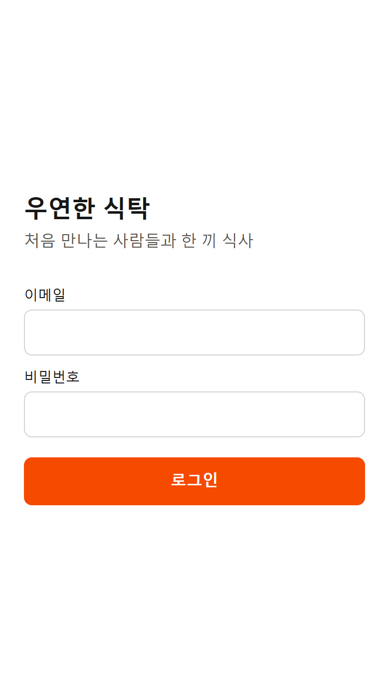
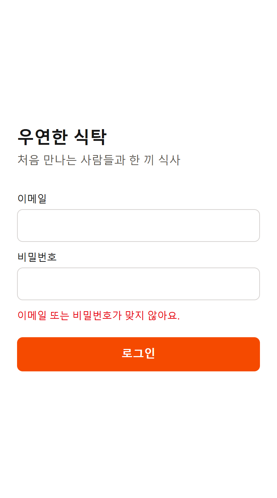
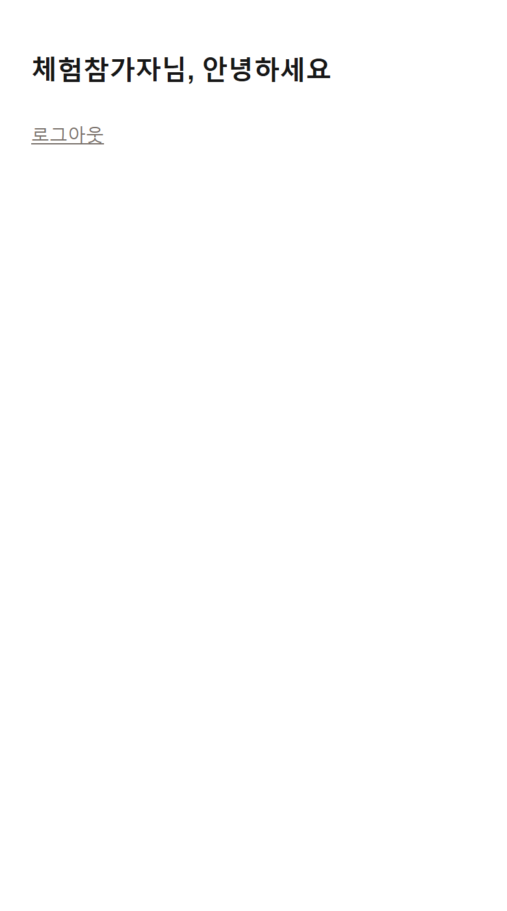
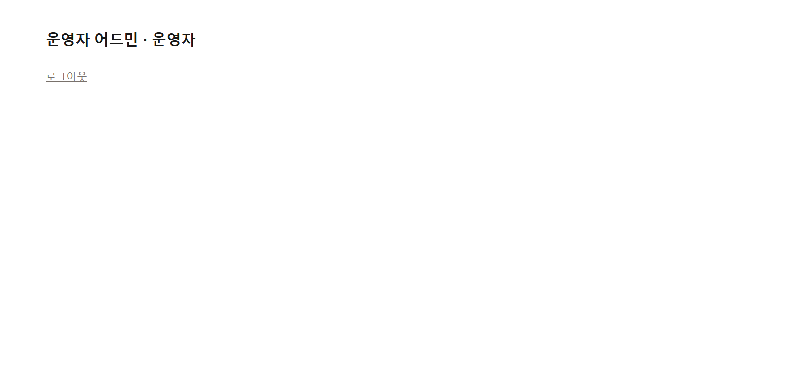

A2-2. 테스트 계정·인증 확인서
우연한 식탁 MVP — 참가자·운영자 테스트 계정, 이메일 로그인, 역할별 화면 분기와 DB 접근 권한(RLS) 확인 결과
| 문서 버전 | v1.1 | 작성일 | 2026-10-19 |
|---|---|---|---|
| 작성자 | 정승환 | 상태 | 로컬 환경 확인 완료 (배포 환경은 첫 배포 후 같은 항목 재확인) |
| 관련 워크 | A2. 기반·데이터 › 테스트 계정 2종 인증·기본 화면 틀 구성 | ||
| 관련 태스크 | 테스트 계정 2종 생성·로그인·역할별 화면 분기 구현 | ||
| 기준 문서 | 02. 기능 명세서 v1.1 (회원·인증, 운영자 권한) · 03. 데이터 정의서 v1.0 (T-01 프로필 role, 테이블별 접근 권한) · ADR-001 (Supabase Auth) | ||
| 확인 환경 | Next.js 16.4 프로덕션 빌드(next start) + 로컬 Supabase(Docker) · Microsoft Edge 자동 실행(Playwright)으로 화면 캡처와 판정을 함께 기록 | ||
1. 테스트 계정
| 구분 | 아이디 | role | 로그인 후 첫 화면 | 볼 수 있는 데이터 |
|---|---|---|---|---|
| 운영자 | admin@usangtak.test | OPERATOR | /admin 운영자 어드민 | 모든 테이블 조회·수정 |
| 참가자 | user@usangtak.test | PARTICIPANT | /home 참가자 홈 | 본인 프로필·신청·알림, 공개 기준정보(회차·코드값 등), 본인 테이블 단체방 |
비밀번호는 문서에 적지 않는다. 시드 스크립트(npm run seed)가 환경 변수 값으로 계정을 만들고, 제출 시 Blaybus Output 탭에만 기재한다. 가상데이터 응답자 294명도 seedNNN@usangtak.test 계정이 있으나 무작위 비밀번호라 로그인용이 아니다.
2. 구현 내용
| 구분 | 내용 | 파일 |
|---|---|---|
| 로그인 | 이메일·비밀번호 로그인(Supabase Auth). 실패 시 계정 존재 여부를 드러내지 않는 같은 문구 표시 | src/app/login/ |
| 세션 유지 | 모든 요청에서 인증 쿠키를 갱신하고, 로그인하지 않은 사용자는 /login?next=원래경로로 보냄 | src/proxy.ts |
| 역할 분기 | 프로필의 role을 서버에서 확인해 운영자는 /admin, 참가자는 /home으로. 다른 역할의 화면에 들어오면 자기 화면으로 돌려보냄 | src/lib/auth.ts |
| DB 권한 | 44개 테이블 모두 RLS 사용, 정책 70개. 운영자 판별 함수 is_operator(), 단체방 구성원 판별 is_room_member(). 참가자는 본인 행만, 결제·매칭·상태 변경은 서버에서만 처리 | supabase/migrations/…_rls_policies.sql |
3. 확인 결과
| # | 확인 항목 | 기대 | 실제 | 판정 |
|---|---|---|---|---|
| 1 | 로그인 없이 /home 접속 | 로그인 화면으로 이동 | /login?next=%2Fhome | 통과 |
| 2 | 틀린 비밀번호로 로그인 | 오류 문구, 로그인 안 됨 | “이메일 또는 비밀번호가 맞지 않아요.” | 통과 |
| 3 | 참가자 계정 로그인 | /home | /home | 통과 |
| 4 | 참가자가 /admin 직접 입력 | 참가자 홈으로 돌려보냄 | /home | 통과 |
| 5 | 운영자 계정 로그인 | /admin | /admin | 통과 |
| 6 | 운영자가 /home 직접 입력 | 어드민으로 돌려보냄 | /admin | 통과 |
| 7 | 참가자 세션으로 DB 조회 — 프로필 / 신청 | 본인 1건 / 본인 것만(0건) | 1건 / 0건 | 통과 |
| 8 | 참가자 세션으로 DB 조회 — 회차 / 코드값 | 공개 기준정보는 조회 가능 | 25건 / 33건 | 통과 |
| 9 | 운영자 세션으로 DB 조회 — 프로필 / 신청 | 전체 조회 | 296건 / 302건 | 통과 |
| 10 | 로그인 없이(anon) 프로필 조회 | 0건 | 0건 | 통과 |
| 11 | 참가자가 자기 role을 OPERATOR로 변경 시도 | 거부 | RLS 정책 위반으로 거부 | 통과 |
4. 화면 캡처



/home
/admin (데스크톱 1100px)③·④는 역할 분기 확인용 최소 화면이다. 하단 탭·어드민 메뉴 등 화면 골격은 같은 워크의 다음 태스크에서 만든다.
5. 남은 일
| 구분 | 내용 | 워크 |
|---|---|---|
| 회원가입 | 이메일 가입 → 프로필 입력(신청서 문항) → 약관 동의 | A2 테스트 계정·기본 화면 틀 |
| 화면 골격 | 참가자 하단 탭(홈·신청·내 일정·알림·마이), 어드민 사이드 메뉴(대시보드·회차·매칭·예외·회원) | A2 테스트 계정·기본 화면 틀 |
| 배포 확인 | 배포 링크에서 3장 11개 항목 재확인 후 테스트 계정 제출 | A2 빈 앱 첫 배포 · A6 |